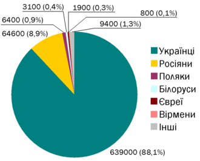

Згідно з останнім переписом населення, у 2001 році, коли він проходив, українці становили 88,1 % населення міста. Найбільшою національною меншиною була російська (8,9 %), менш чисельними були польська (0,9 %), білоруська (0,4 %), єврейська (0,3 %) та вірменська (0,1 %). На інші національності припадало 1,3 %.
на головну